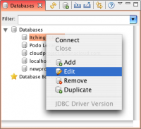
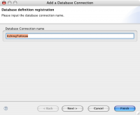
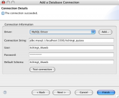
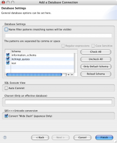

Contents |
What
The database details dialog lets you change the name, connection string, and access information of a database connection.
How
Edit Database Details
  Accessing database details
Accessing database details
{kind=link}
To display the database details view, right click on an existing database in the databases view and select "edit". A new window will pop-up with details about the connection.
Step 1
 Name connection
{kind=link}
On the first screen edit the name for your database connection and click the next button.
Step 2
 Connection details
{kind=link}
Select or add the JDBC Driver. Enter the connection details including host, username, password, and database name. You can click the test connection button. If the connection is successful a message will appear in the top of the window. If there is an error, an error message will show details of the error. When you are ready, click the next button.
Step 3
 Access options
{kind=link}
On the final screen you can select connection access options. You can filter by string or regular expression. You can check and uncheck which databases are available.
If you would like your queries to auto-commit, check the "SQL Auto Commit" box.
When you are ready, click finish. Your connection to the database should now be updated. You will be able to browse your database from the DB Tree View.